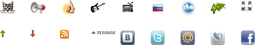
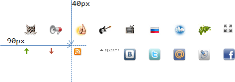

CSS-спрайты
CSS-спрайт - способ объединить много изображений в одно, чтобы:
-
Сократить количество обращений к серверу.
-
Загрузить несколько изображений сразу, включая те, которые понадобятся в будущем.
-
Если у изображений сходная палитра, то объединенное изображение будет меньше по размеру, чем совокупность
исходных картинок.
Рассмотрим, как это работает, на примере дерева:
<ul>
<li class="open">
<div class="icon"></div>
<div class="text">Раздел 1<br>
В две строки</div>
<ul>
<li class="closed">
<div class="icon"></div>
<div class="text">Раздел 1.1 в одну строку</div>
</li>
<li class="left">
<div class="icon"></div>
<div class="text">Страница 1.2<br>
в две строки</div>
</li>
</ul>
</li>
<li class="closed">
<div class="icon"></div>
<div class="text">Раздел 2<br>
В две строки</div>
</li>
</ul>
-
Раздел 1
В две строки
-
Раздел 1.1 в одну строку
-
Страница 1.2
в две строки
-
Раздел 2
В две строки
Сейчас «плюс», «минус» и «статья» - три отдельных изображения. Объединим их в спрайт.
Шаг 1. Использовать background
Первый шаг к объединению изображений в «спрайт» - показывать их через background, а не через
тег img.
В данном случае он уже сделан. Стиль для дерева:
.icon {
width: 16px;
height: 16px;
float: left;
}
.open .icon {
cursor: pointer;
background: url(images/minus.gif);
}
.closed .icon {
cursor: pointer;
background: url(images/plus.gif);
}
.leaf .icon {
cursor: text;
background: url(images/article.gif);
}
Шаг 2. Объединить изображения
Составим из нескольких изображений одно icons.gif, расположив их, например, по вертикали.
Из  ,
,  и
получится одна картинка:
и
получится одна картинка:

Шаг 3. Показать часть спрайта в «окошке»
А теперь самое забавное. Размер div для иконки - жестко фиксирован:
.icon {
width: 16px;
height: 16px;
float: left;
}
Это значит, что если поставить в качестве background объединенную картинку, то вся она не
поместится, будет видна только верхняя часть:
Если бы высота иконки была больше, например, 16x48, как в примере ниже, то было бы видно и
остальное:
... Но так как там всего 16px, то помещается только одно изображение.
Шаг 4. Сдвинуть спрайт
Сдвиг фона background-position позволяет выбирать, какую именно часть спрайта видно.
В спрайте icons.gif изображения объединены так, что сдвиг на 16px покажет
следующую иконку:
.icon {
width: 16px;
height: 16px;
float: left;
background: url(images/icons.gif) no-repeat;
}
.open .icon {
background-position: 0 -16px; /* Вверх на 16px */
cursor: pointer;
}
.closed .icon {
background-position: 0 0; /* По умолчанию */
cursor: pointer;
}
.article .icon {
background-position: 0 -32px; /* Вверх на 32px */
cursor: text;
}
Результат:
-
Раздел 1
В две строки
-
Раздел 1.1 в одну строку
-
Страница 1.2
в две строки
-
Раздел 2
В две строки
-
В спрайт могут объединяться изображения разных размеров, т.е. сдвиг может быть любым.
-
Сдвигать можно и по горизонтали и по вертикали.
Отступы
Обычно отступы делаются margin/padding, но иногда их бывает удобно предусмотреть в спрайте.
Тогда если элемент немного больше, чем размер изображения, то в «окошке» не появится лишнего.
Пример спрайта с отступами:

Иконка RSS находится в нем на координатах (90px, 40px):

Это значит, что для того, чтобы показать эту иконку, нужно сместить фон:
background-position: -90px -40px;
При этом в левом-верхнем углу фона как раз и будет эта иконка:
Очень интересная новость Очень интересная новость Очень интересная новость Очень интересная новость
Очень интересная новость Очень интересная новость Очень интересная новость Очень интересная новость
Очень интересная новость Очень интересная новость Очень интересная новость Очень интересная новость
Очень интересная новость Очень интересная новость Очень интересная новость Очень интересная новость
Очень интересная новость Очень интересная новость Очень интересная новость Очень интересная новость
Элемент в котором находится иконка (в рамке), больше по размеру, чем картинка:
Его стиль:
.rss {
width: 35px; /* Ширина/высота больше, чем размер иконки */
height: 35px;
border: 1px solid black;
float: left;
background-image: url(sprite.png);
background-position: -90px -40px;
}
Если бы в спрайте не было отступов, то в такое большое «окошко» наверняка влезли бы другие иконки.
Итого
Когда использовать для изображений img, а когда CSS background?
Решение лучше всего принимать, исходя из принципов семантической верстки.
Задайте вопрос - что здесь делает изображение? Является ли оно самостоятельным элементом страницы
(фотография, аватар посетителя), или же оформляет что-либо (иконка узла дерева)?
Элемент img следует использовать в первом случае, а для оформления у нас есть CSS.
Спрайты позволяют:
-
Сократить количество обращений к серверу.
-
Загрузить несколько изображений сразу, включая те, которые понадобятся в будущем.
-
Если у изображений сходная палитра, то объединенное изображение будет меньше по размеру, чем
совокупность исходных картинок.
Если фоновое изображение нужно повторять по горизонтали или вертикали, то спрайты тоже подойдут - изображения
в них нужно располагать в этом случае так, чтобы при повторении не были видны соседи, т.е. соответственно,
вертикально или горизонтально, но не «решеткой».
Далее мы встретимся со спрайтами при создании интерфейсов, чтобы кнопка при наведении меняла свое изображение.
Один спрайт будет содержать все состояния кнопки, а переключения внешнего вида - осуществляться при помощи
сдвига background-position.